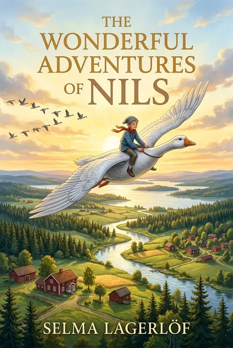
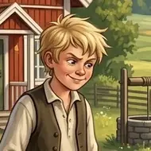
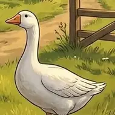
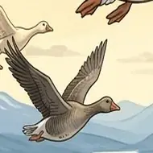
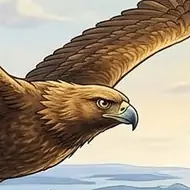
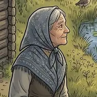

The Wonderful Adventures of Nils
by Selma Lagerlöf
ClassicFantasy AdventureEnglish
After a mischievous boy is shrunk by an elf, he flies across Sweden on the back of a goose with a flock of wild geese. Along the way he learns kindness, courage and what home means.
12 chapters. Illustrated edition in 12 chapters.
Table of Contents
- 1 The Boy
- 2 Akka from Kebnekaise
- 3 The Wonderful Journey of Nils
- 4 Glimminge Castle and the Great Crane Dance
- 5 Across Southern Sweden
- 6 The Wonders of Öland and the Islands
- 7 Two Cities, Old Legends, and the Crows
- 8 The Old Peasant Woman and the Great Bird Lake
- 9 The Wind Witch, the Flood, and Other Adventures
- 10 Stockholm and the Eagle Gorgo
- 11 Through Northern Sweden to Lapland
- 12 Home at Last
Dramatis Personae
-

Nils The boy turned small by an elf -

Morten The white farm gander who carries Nils -

Akka The wise leader of the wild geese -

Gorgo The golden eagle raised by Akka -

The Old Peasant Woman A lonely woman whose children moved away
Chapters here are formatted for reading convenience from the authoritative edition.